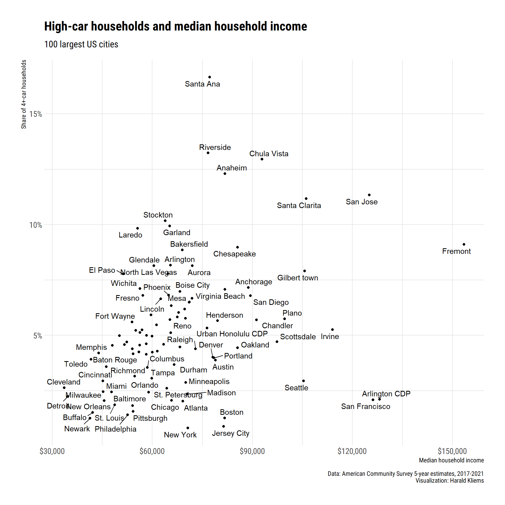
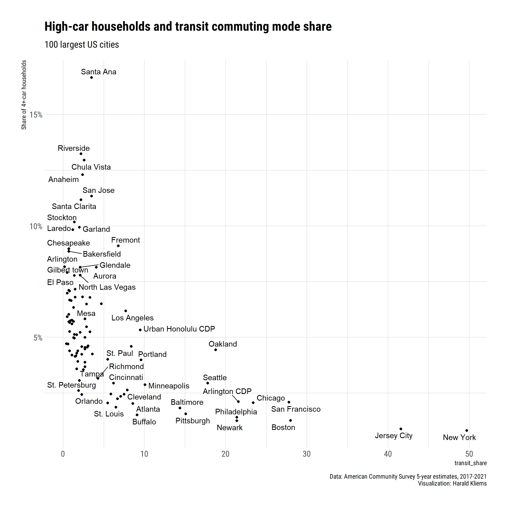

A quick look at households with 4 cars or more.
Sometimes you get sucked into a data rabbit hole. For reasons I dont exactly remember, I got interested in households with a lot of cars. Heres a quick blog post about households with 4 or more vehicles available, based on data from the American Community Survey. We limit the analysis to the 100 cities with the largest population (my preferred way of doing it because it includes the city I live in, Madison, Wisconsin).
Lets start with a map:
get_pop <- function(state){
get_acs("place", table = "B01003", state = state, cache_table = TRUE)
}
pop <- map_dfr(datasets::state.abb, get_pop)
pop_100_states <- pop |> arrange(desc(estimate)) |> head(100) |> mutate(state = str_sub(GEOID, start = 0, end = 2)) |> distinct(state)
pop_100_cities <- pop |> arrange(desc(estimate)) |> head(100) |> pull(NAME)
get_cars <- function(state){
get_acs("place", table = "B08201",
summary_var = "B08201_001",
state = state, cache_table = TRUE, geometry = T)
}
cars <- map_dfr(pop_100_states, get_cars)
tmap_mode("view")
cars |>
filter(NAME %in% pop_100_cities) |>
filter(variable == "B08201_006") |>
mutate(cars_4_pct = estimate/summary_est,
cars_4_pct_label = scales::percent(cars_4_pct)) |>
arrange(desc(cars_4_pct)) |>
tm_shape() +
tm_dots(title = "4+-car households",
col = "cars_4_pct",
id = "NAME",
popup.vars = c("Share of 4+-car households" = "cars_4_pct_label"),
legend.format=list (fun=function (x) paste0 (formatC (x*100, digits=0, format="f"), " %")),
style = "jenks") +
tm_layout(title = "High-car ownership in US cities") +
tm_credits("100 largest US cities. Data: American Community Survey")Some patterns appear to emerge, but lets look at the top and bottom ten of the list in a table:
top_bottom_vector <- c(top_bottom = rep("Highest %", 10), rep("Lowest %", 10))
top_bottom <- cars |>
sf::st_drop_geometry() |>
filter(NAME %in% pop_100_cities) |>
filter(variable == "B08201_006") |>
mutate(cars_4_pct = estimate/summary_est,
NAME = str_remove(NAME, " city")) |>
arrange(desc(cars_4_pct))
top <- head(top_bottom, 10) |> mutate(top_bottom = "Highest %")
bottom <- tail(top_bottom, 10) |> mutate(top_bottom = "Lowest %")
top_bottom_table <- rbind(top, bottom)
top_bottom_table |>
group_by(top_bottom) |>
select(NAME, estimate, cars_4_pct, top_bottom) |>
gt() |>
tab_header(title = "US cities with the highest and lowest % of owning 4+ cars",
subtitle = "100 most populous cities") |>
fmt_percent(columns = cars_4_pct, decimals = 1) |>
fmt_number(estimate, use_seps = TRUE, decimals = 0) |>
tab_spanner("4+ car households", columns = c(estimate, cars_4_pct)) |>
cols_label(NAME = "City", estimate = "number", cars_4_pct = "percent") |>
tab_source_note("American Community Survey, 5-year estimates, 2017-2021. Table B08201") |>
opt_table_font(stack = "industrial")| US cities with the highest and lowest % of owning 4+ cars | ||
| 100 most populous cities | ||
| City | 4+ car households | |
|---|---|---|
| number | percent | |
| Highest % | ||
| Santa Ana, California | 12,754 | 16.6% |
| Riverside, California | 11,683 | 13.2% |
| Chula Vista, California | 10,656 | 12.9% |
| Anaheim, California | 12,730 | 12.3% |
| San Jose, California | 36,761 | 11.3% |
| Santa Clarita, California | 8,182 | 11.2% |
| Stockton, California | 9,785 | 10.2% |
| Garland, Texas | 7,881 | 9.9% |
| Laredo, Texas | 7,142 | 9.8% |
| Fremont, California | 6,791 | 9.1% |
| Lowest % | ||
| Atlanta, Georgia | 4,467 | 2.0% |
| St. Louis, Missouri | 2,621 | 1.9% |
| Baltimore, Maryland | 4,474 | 1.8% |
| Pittsburgh, Pennsylvania | 2,151 | 1.6% |
| Buffalo, New York | 1,789 | 1.5% |
| Philadelphia, Pennsylvania | 9,067 | 1.4% |
| Boston, Massachusetts | 3,431 | 1.3% |
| Newark, New Jersey | 1,370 | 1.2% |
| Jersey City, New Jersey | 1,026 | 0.9% |
| New York, New York | 26,323 | 0.8% |
| American Community Survey, 5-year estimates, 2017-2021. Table B08201 | ||
What can explain the difference? Is it something uniquely Californian and Texan that has people owning so many cars? One thing to look is median household income. Places with higher incomes probably afford more car ownership.
get_income <- function(state) {
get_acs("place",
table = "B19013", survey = "acs5",
state = state, cache_table = TRUE, geometry = FALSE
)
}
income <- map_dfr(pop_100_states, get_income)
income |>
filter(NAME %in% pop_100_cities) |>
left_join(top_bottom, by = "GEOID") |>
mutate(short_name = str_extract(NAME.x, "^([^,]*)"),
short_name = str_remove(short_name, " city| municipality"),
median_income = estimate.x) |>
ggplot(aes(median_income, cars_4_pct, label = short_name)) +
ggrepel::geom_text_repel() +
geom_point() +
scale_x_continuous(name = "Median household income", labels = scales::label_dollar()) +
scale_y_continuous(name = "Share of 4+-car households", labels = scales::label_percent()) +
theme_ipsum_rc() +
labs(title = "High-car households and median household income",
subtitle = "100 largest US cities",
caption = "Data: American Community Survey 5-year estimates, 2017-2021\nVisualization: Harald Kliems")
We should also look at the average household size. Maybe cities with a high share of 4+-car households just have larger households!
get_hh_size <- function(state) {
get_acs("place",
variable = "B25010_001", survey = "acs5",
state = state, cache_table = TRUE, geometry = FALSE
)
}
hh_size <- map_dfr(pop_100_states, get_hh_size)
hh_size |>
filter(NAME %in% pop_100_cities) |>
left_join(top_bottom, by = "GEOID") |>
mutate(short_name = str_extract(NAME.x, "^([^,]*)"),
short_name = str_remove(short_name, " city| municipality"),
hh_size = estimate.x) |>
ggplot(aes(hh_size, cars_4_pct, label = short_name)) +
ggrepel::geom_text_repel() +
geom_point() +
scale_x_continuous(name = "Mean household size") +
scale_y_continuous(name = "Share of 4+-car households", labels = scales::label_percent()) +
theme_ipsum_rc() +
labs(title = "High-car households and average household size",
subtitle = "100 largest US cities",
caption = "Data: American Community Survey 5-year estimates, 2017-2021\nVisualization: Harald Kliems")And yes, theres a very strong relationship! Of course there are outliers such as New York and Bostonwhich probably tell us we should add an indicator for cities with a good public transit system. While its not perfect, we use transit commute mode share as our variable.
get_transit <- function(state) {
get_acs("place",
table = "S0801", survey = "acs5",
state = state, cache_table = TRUE, geometry = FALSE
)
}
transit <- map_dfr(pop_100_states, get_transit)
transit |>
filter(NAME %in% pop_100_cities) |>
filter(variable == "S0801_C01_009") |>
left_join(top_bottom, by = "GEOID") |>
mutate(short_name = str_extract(NAME.x, "^([^,]*)"),
short_name = str_remove(short_name, " city| municipality"),
transit_share = estimate.x) |>
ggplot(aes(transit_share, cars_4_pct, label = short_name)) +
ggrepel::geom_text_repel() +
geom_point() +
# scale_x_continuous(name = "Median household income", labels = scales::label_dollar()) +
scale_y_continuous(name = "Share of 4+-car households", labels = scales::label_percent()) +
theme_ipsum_rc() +
labs(title = "High-car households and transit commuting mode share",
subtitle = "100 largest US cities",
caption = "Data: American Community Survey 5-year estimates, 2017-2021\nVisualization: Harald Kliems")
High transit cities have few high-car households; but within low transit cities, theres still a lot of variability.
If this werent just a quick post, Id probably try building a model that takes income, household size, and transit mode share together. But Ill leave that for another day or someone else.
For attribution, please cite this work as
Kliems (2024, Feb. 28). Harald Kliems: Where are the 4+-car households?. Retrieved from https://haraldkliems.netlify.app/posts/2024-02-29-where-are-the-4-car-households/
BibTeX citation
@misc{kliems2024where,
author = {Kliems, Harald},
title = {Harald Kliems: Where are the 4+-car households?},
url = {https://haraldkliems.netlify.app/posts/2024-02-29-where-are-the-4-car-households/},
year = {2024}
}